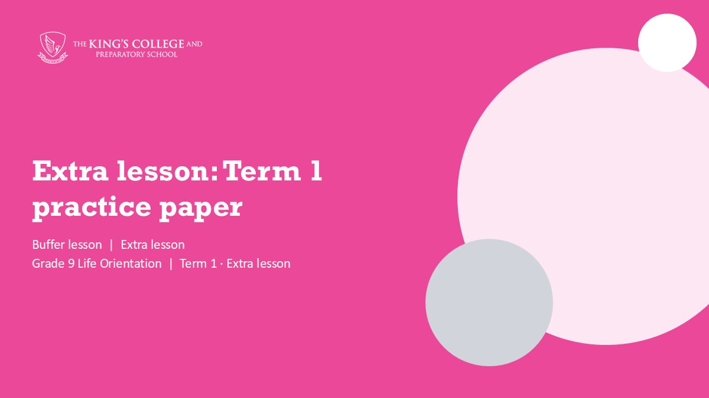

Term 1 · Extra lesson · Extra lesson: practice paper
Extra lesson: Term 1 practice paper
Start here
Today I will
- Practise a short exam paper under time
- Write a full Section C paragraph
- Mark my paper and plan for the exam
Think first
How long should you spend on a 25-mark paper, and how will you split the time?
Words to know
- Section A
- Short questions: multiple choice, terms, true/false.
- Section B
- Questions about a scenario or source.
- Section C
- A paragraph answer: choose ONE of two questions.
- Mark allocation
- The numbers in brackets that show how many points to give.
Slides

Notes
Exam tips
- Read first: Read the instructions and all the questions.
- Plan time: About 1 minute per mark.
- Build answers: Statement, reason, qualifier, outcome.
- Use the source: Names and details from the scenario earn marks.
Remember
Read, plan, build, check.
Written practice
SECTION A (8 marks)
- A1Choose the correct answer. Write only the letter.
(a) Which qualification is offered at a TVET college? A NSC B NCV C Bachelor's degree D Diploma in Law
(b) Money for study that does NOT have to be paid back is a… A loan B overdraft C bursary D salary
(c) Which subject is compulsory for ALL learners in Grades 10–12? A Life Sciences B Accounting C Life Orientation D Geography(3 x 1) (3) - A2Give ONE word or term for each description.
(a) A subject required for certain careers or courses.
(b) Unwritten rules about how people in a group are expected to behave.
(c) Owning your actions and their results without excuses.(3 x 1) (3) - A3True or false: 'The NCV only leads to manual jobs and you can never study further.' If false, correct the statement.(1 x 2) (2)
SECTION B (9 marks)
Read the source
Thabo has to choose his Grade 10 subjects by Friday. He loved rugby, but since the school moved to basketball he has lost interest in sport and his marks have dropped. He enjoys building things and helped his uncle fix a roof in the holidays. His friends are all taking Accounting, and he wants to stay with them. His Maths mark is 52%.
- B1Name the type of influence Thabo's friends have on his decision.(1 x 1) (1)
- B2Explain why Thabo should check gatekeeper subjects before he chooses.(1 x 2) (2)
- B3Suggest TWO people Thabo could ask for advice. For each, explain how they could help.(2 x 2) (4)
- B4Explain ONE route after Grade 9 that could suit Thabo's interests.(1 x 2) (2)
SECTION C (8 marks): answer ONE question
- C1Analyse TWO ways in which the media can influence how teenagers see sexuality and relationships.(2 x 4) (8)
- C2OR: Analyse TWO ways in which healthy lifestyle choices can help a Grade 9 learner reach their goals.(2 x 4) (8)
Finished early?
Exam practice
Do ONE set of the exam practice bank at the back of your Activity Book.
- Choose the set for the topic you feel least ready for.
- Answer it using the mark allocations.
- Mark it with the exam practice memo on Google Classroom.
- Fill in the STOP box before you start another set.